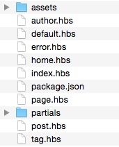
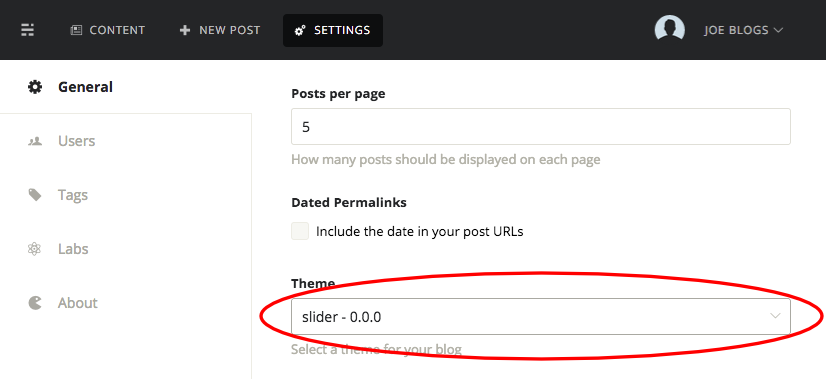
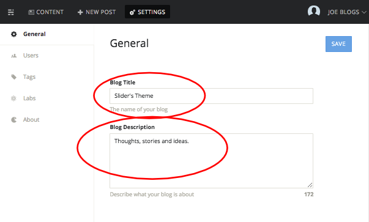
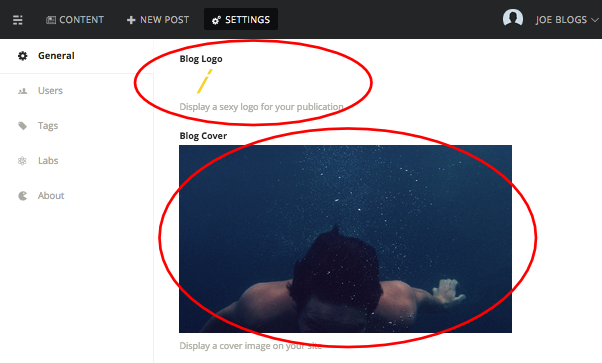
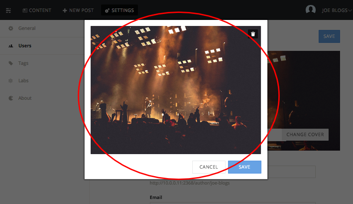
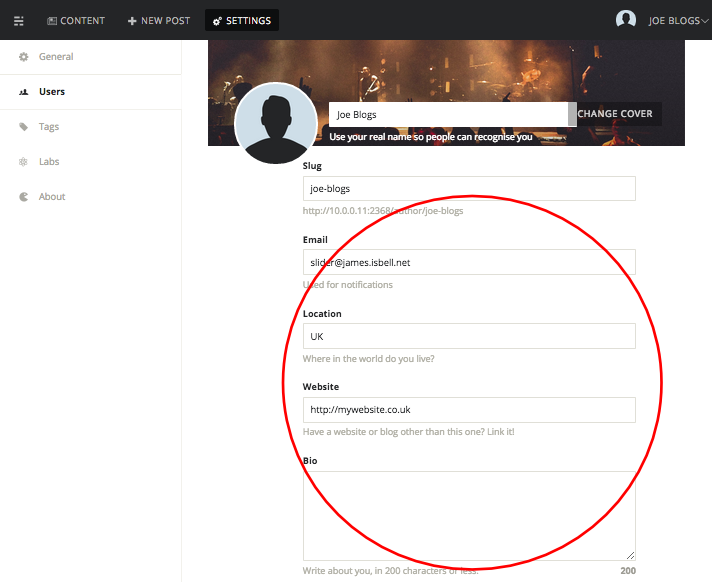
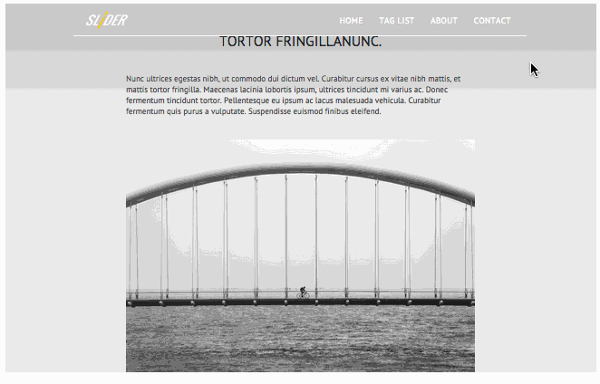
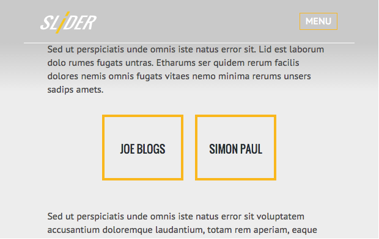
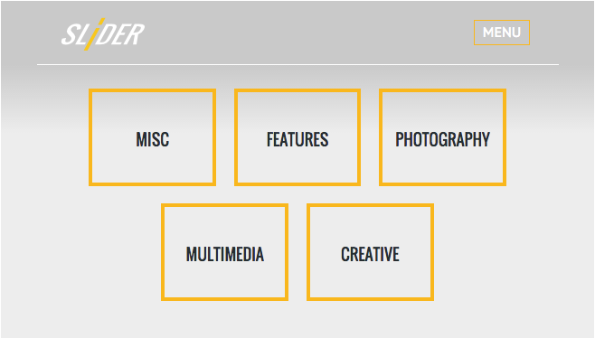

Thank you for purchasing Slider.
A Multi-Purpose Theme For Ghost Documentation
This documentation will guide you though the installation, configuration and customisation of this theme.
We hope you enjoy this theme and all the features that come with it. We endeavour to create the best, so if you need advice with something, would like to make a feature request or are unhappy with our product let us know and we will do what we can to help.
If you like this theme why not share the love and give us a good rating.
THEME VERSION AND UPDATES
1. Theme Version
- Version number: 1.0.1
- Date of release: 19.03.2015
2. Change Overview
- 19.03.2015 v1.0.1
- Scroll issue with some elements on a post page on iPhones
- 25.02.2015 v1.0.0
- Initial realease
3. Update to 1.0.1 from 1.0.0
Before you update backup your theme. Then add and overwrite the old files shown below with the newer ones.
- REPLACE: default.hbs
- REPLACE: assets/js/script.js
- REPLACE: assets/css/style.css
- REPLACE: assets/scss/style.scss
This section will guide you through Slider's theme file structure so you know where everything is if you want to edit this theme.
Once downloaded, unzip the compressed folder to see the structure of the theme folder. You'll see something like this:
1. hbs files
All .hbs files are placed in the root of the template folder. These include:
- author.hbs - template showing the users profile information and posts
- default.hbs - The main template file that wraps around other content
- error.hbs - styled error 404 template
- home.hbs - template for the home page content
- index.hbs - template main page content
- page.hbs - generic template for static pages
- post.hbs - template post pages
- tag.hbs - template for tag pages
2. Partial .hbs files
The partial .hbs files can be found in the partials/ folder. These include:
- pagination.hbs - pagination html for the bottom of multiple posts pages
- disqus.hbs - disqus code for the post pages
- loop.hbs - a template that loops though all the posts for the current page
3. CSS and files
The .css files are placed in the assets/css folder. These include:
- normalize.css - resets the browsers styles to be cross platform constant
- nprogress.css - loading progress bar base styles
- perfect-scrollbar.min.css - base css for the scrollbar
- style.css - main stylesheet file
- style-compressed.css - A Compressed version of the main stylesheet file
The main CSS file (style.css) contains all the main styling for this theme. The file is separated into sections shown bellow.
/* ============================================================ */
/* Foundations */
/* ============================================================ */
/* ============================================================ */
/* Navigation */
/* ============================================================ */
/* ============================================================ */
/* Slider items */
/* ============================================================ */
/* ============================================================ */
/* Posts Styles & Page Styles */
/* ============================================================ */
/* ============================================================ */
/* Tag and Author page styles */
/* ============================================================ */
/* ============================================================ */
/* Error 404 page styles */
/* ============================================================ */
/* ============================================================ */
/* Scrollbar */
/* ============================================================ */
/* ============================================================ */
/* NProgress - custom styling */
/* ============================================================ */
/* ============================================================ */
/* Odamae - Contact form styles */
/* ============================================================ */
/* ============================================================ */
/* General Queries */
/* ============================================================ */
4. SCSS and files
The main SCSS file can be found in the assets/scss/style.scss folder and if edited should override the assets/css/style.css file.
This SCSS files contain some extra sections which help to make writing css quicker. The Vars section contains the theme's colours, widths and heights. The last comment contains SCSS mixins, and SCSS imports.
/* ============================================================ */
/* Vars */
/* ============================================================ */
/* ============================================================ */
/* mixin's, imports*/
/* ============================================================ */
~ The rest is the same as the CSS comments
5. Font and icon files
The font and icon files and can be found in the assets/fonts folder.
6. Javascript files
The javascript files can be found in the assets/js folder. Documentation for the relevant files can be found in the credits section. The .js files in this theme are:
- script.js - the main javascript for Slider
- script-compressed.js - a compressed version of the main javascript file
- jquery.min.js - javascript library
- jquery.fitvids.js - scales and fits videos within its container
- jquery.history.js - helps with URL history when using Ajax
- jquery.touchSwipe.min.js - adds swipe accessability to the theme
- perfect-scrollbar.min.js - scrollbar script
- nprogress.js - javascript for the loading progress bar
The main .js file (script.js) contains the main script for this theme. The file is separated into sections shown bellow.
/* ============================================================ */
/* Layout Config
/* ============================================================ */
/* ============================================================ */
/* Load functions when page is loaded */
/* ============================================================ */
/* ============================================================ */
/* Load Disqus comments */
/* ============================================================ */
/* ============================================================ */
/* Create mobile menu */
/* ============================================================ */
/* ============================================================ */
/* Get all tags */
/* ============================================================ */
/* ============================================================ */
/* Get all authors */
/* ============================================================ */
/* ============================================================ */
/* Render homepage slider */
/* ============================================================ */
/* ============================================================ */
/* Sliders auto scrolling system */
/* ============================================================ */
/* ============================================================ */
/* Ajax Loading */
/* ============================================================ */
QUICK INSTALL
This section will guide you though the quick install process.
1. Download and Extract Files
- Unzip the main file you've downloaded from themeforest.net
- Navigate to the Theme/slider_vX.X.X folder
1. Select Version
2. Upload Ghost Theme
Ghost Pro hosted
- Zip-up the file that you navigated to and upload using these instructions.
Self Hosted Server
- Copy file that you navigated to and upload to content/themes of your ghost hosted folder.
- Restart Ghost.
3. Select Theme
-
Login to ghost, click on the settings options and select the theme from the 'Theme' dropdown, save settings and ENJOY!

4. Add Example Post and Page Content
We've prepackaged some example posts and pages for you to import so you can test out your new template. Below exaplains how to import the example content.
NOTE: THIS PROCESS WILL WIPE ANY EXISTING DATA AND IMAGES YOUR ON YOUR GHOST INSTALLATION
- Login to your admin account
- Navigate to settings
- In the left column click on labs
- On the labs page next to the import title click the 'choose import' button
- locate the file to import at Example Content/sliders-theme.ghost.XXX-XX-XX.json
- Click import
- Now add the images by moving the folder Example Content/images/2015 to your ghost content/images folder
PERSONALISE YOUR THEME
The instructions bellow will help you to personalise your template to suit your needs.
1. Enable or disable auto Scrolling
To enable or disable auto scrolling navigate to and open the assets/js/script.js file and edit the variable below.
//================================
//Enable or disable auto Scrolling
//================================
//1.true = enable auto scrolling
//1.false = disable auto scrolling
var autoScroller= true;
2. Enable or disable home page title animations
To enable or disable home page title animations navigate to and open the assets/js/script.js file and edit the variable below.
//==================================
//Enable or disable title animations
//==================================
//1.true = enable title animations
//1.false = disable title animations
var animateTitles= true;
3. Set the default homepage post content reveal Transition
To set default post content reveal transition navigate to and open the assets/js/script.js file and edit the variable below.
//=========================================
//set defult post content reveal transition
//=========================================
// 1. same as alignment direction = "auto"
// 2. from bottom = "bottom"
// 3. from left = "left"
// 4. from right = "right"
// 5. nothing = ""
// 6. fade in = "fade"
var defaultContentTransition = "bottom";
4. Set the default homepage post content alignment
To set the default homepage post content alignment navigate to and open the assets/js/script.js file and edit the variable below.
//==================================
// set default post content alignment
//==================================
// 1. alternate left and right = "alternate"
// 2. align left = "left"
// 3. align right = "right"
// 4. center = "center"
// 5. bottom left = "bottomleft"
var defaultContentAlignment= "alternate";
5. Default option to hide or show the "read more" button
To hide or show the "read more" button navigate to and open the assets/js/script.js file and edit the variable below.
//==============================================
//default option to hide or not hide post button
//==============================================
// 1. Show button = false
// 2. Hide Button = true
var defaultHideButton= false;
6. Default option to hide or show the excerpt
To hide or show the excerpt navigate to and open the assets/js/script.js file and edit the variable below.
//===============================================
//default option to hide or show the post excerpt
//===============================================
// 1. Show excerpt = false
// 2. Hide excerpt = true
var defaultHideExcerpt= false;
7. Edit welcome page content
You can personalise your homepage welcome page by editing the details described below.
Add your title and description
login to ghost admin, click on settings and navigate to general settings. Enter your title and description into the fields provided and save.
1. Add your logo and background image
login to ghost admin, click on settings and navigate to general settings. Add your logo and background image in the fields provided and save.
8. Adding links to the navigation bar
If you wish to add links to the navigation bar you can do so by editing the default.hbs file
To add a new menu item find the tag <div class="navLinks"> Then copy and paste the bold code below making sure you change the highlighted code to the correct URL and title.
<div class="navLinks">
<ul>
<li><a href="/" class="active ajaxPageLink">Home</a></li>
<li><a href="/alltags" class="ajaxPageLink tagList">tag list</a>
<ul>
</ul>
</li>
<li><a href="/about" class="ajaxPageLink">About</a></li>
<li><a href="/contact" class="ajaxPageLink">Contact</a></li>
<li><a href="*my/url/goes/here*" class="ajaxPageLink">*TITLE GOES HERE*</a></li>
</ul>
</div>
9. Install Disqus Comments
By Default, this theme supports Disqus comments www.disqus.com. If you are new to Disqus please see the QuickStart Guide.
Please replace *YOUR_DISQUS_SHORTNAME* with your Disqus shortname in the file: partials/disqus.hbs.
<section class="postContent" data-username="*YOUR_DISQUS_SHORTNAME*" data-ghostid="ghost-{{id}}" id="disqus_thread"></section>
<noscript>Please enable JavaScript to view the <a href="http://disqus.com/?ref_noscript">comments powered by Disqus.</a></noscript>
10. Install the contact form
This template is using google web fonts. In order to customise to your own font follow the steps bellow.
- Create an account at https://odamae.io/
- Click on "Get the code" button (see image below)
- Copy the code (see image below)
- Paste the code into your post or page
- Paste <input type="hidden" id="odamae-use-css" value="false"> above the code you previously pasted. This will allow the Slider theme to use its own css styles.
11. Change font
This template is using google web fonts. In order to customise to your own font follow the steps bellow.
- Replace the google web font url found in at top of the default.hbs file within the tag with your new code from google fonts.
- If you are using SCSS you can simply edit the values $bodyFont and $titleFont at the top of the assets/scss/styles.scss file as required. Otherwise change the respective font families in the assets/css/style.css file instead.
12. Changing Theme Colours
If you are using SCSS personalising your theme to your preferred colour is a breeze. Simply open up assets/scss/styles.scss and edit the colour variables at the top of the file.
$primary: #FFB500;
$secondary: #262F33;
$third: #ededed;
$base: #fff;
$dark: #4c5356;
$navBackground: rgba(38, 47, 51, 0.98);
$navStartColor: #c9c9c9;
$articleBG: #ededed;
$articleText: #484848;
$articleHeader: #222;
$secondaryOpacity rgba(38, 47, 51, 0.1);
$primaryOpacity: rgba(255, 174, 0, 0.5);
For those that are new to SCSS you can read up about it on the SCSS wiki or the SASS website. Once you have edited your SCSS file you'll need to convert it to CSS.
An easy way to automatically convert SCSS files back to CSS is to run an app called Scout in the background as you are editing.
- First you want to create a new project, click on the ‘+’ button in the bottom left corner
- Next for the input folder under ’stylesheet Directories’ find the the assets/SCSS folder in the Slider theme folder
- For the output choose the assets/CSS folder
- Click the play button in the left panel.
Now every time you edit the SCSS file it should automatically update the CSS file for you.
13. remove the boxed boarder
Not a fan of the boxed boarder look? If you are using SCSS simply open up assets/scss/styles.scss and edit the variable below.
$boxedThickness:15px;
$boxedThicknessBottom:35px;
14. Personalise the author page
To personalise the author page follow the following steps.
- Log into your Ghost admin page
- Click the "settings" icon on the top menu bar
- Click on the "Users" link in the left column
- Select a user
To add a cover image click on the change cover button and drag an image in the empty box. Click save to confirm the change.
To add a cover image click on the change cover button and drag an image in the empty box. Click save to confirm the change.
15. Personalise the tag pages
To personalise the tag pages follow the following steps.
- Log into your Ghost admin page
- Click the "settings" icon on the top menu bar
- Click on the "Tags" link in the left column
- Select a tag
- Add a cover image and change the text in the right hand column.
- To save your changes click anywhere other than the right column or press the X in the to right corner.
16. Customise your Highlight.js Syntax highlighter
Highlight.js is a syntax highlighter that works with many languages and comes with many themes.
Install extra languages
Highlighter.js comes packed with 22 of the most common languages however if you want to use its 112 other languages you'll need to download a custom package and change the refrence at the bottom of the default.hbs file.
Custom theme
Highlighter.js provides 49 syntax styles for you to choose from. Here is the full list. To change your syntax to another style find the name of the theme here and replace the css refrence at the bottom of the default.hbs file. An example is shown below.
<link rel="stylesheet" href="//cdnjs.cloudflare.com/ajax/libs/highlight.js/8.4/styles/*themeName*.min.css">
17. Tag background colour
If you would like to set preset backgrounds for each tag post you can do so by changing the variable below. Change the left side to match or tag name and the right side to your desired colour in hex or rgb. The file can be found in the assets/js/script.js folder.
//Preset colours for tagged post backgrounds
//===============================================
//Enter the name of the tag on the left and the colour on the right
var taggedColors = {"tag-audio":"red","tag-video":"orange","tag-name":"myColor"};
17. Mobile Menu always on
To make the main navigation show the mobile menu all the time instead of only when the screen is small open up the default.hbs file and place navMobile in between the quotes of the body class tag.
6. Writing Posts
Writing posts with Ghost's Markdown is easy. Slider comes packaged with a few additional extras. This section will guide you through these features.
1. Slider hero effects and settings
With Slider you have the ability to effect the hero title for every post. You can change the animate transition, the alignment, background image or colour, choose to have media content and even make the text black or white

Title transitions
To change the transition of an individual post title, add the code to the top of your post and replace "*myTransition*" with either: "auto", "fade", "left", "right", "bottom" or ""
<div data-transition="*myTransition*"></div>
Title alignment
To change the alignment of an individual post title, add the code to the top of your post and replace "*myAlignment*" with either: "alternate" "left", "right", "center" or "bottomleft"
<div data-align="*myAlignment*"></div>
Title color - negative / positive
To change the title color of a single post to be negative or positive, add the code to the top of your post and replace "*boolean*" with either: "true" or "false"
<div data-negative="*boolean*"></div>
Hide read more button and Excerpt text
To hide or show the button or excerpt for a single post, add the code to the top of your post and replace "*boolean*" with either "true" or "false"
<div data-button="*boolean*" data-excerpt="*boolean*"></div>
Background colour
To change the background color of a single post, add the code to the top of your post and replace "*myColor*" with any hex or rgb value
<div data-color="*myColor*"></div>
Background image
To add a background image to your post follow the instructions below.
- In your markdown post, click on the gear icon on the bottom right
- Drag your image to the top grey box. See picture for details
Embed media content
Place embeded media content into the hero section by following the guide below.
For embeded content such as youtube, vimeo or soundcloud paste the code into your markdown and add class="media" anywhere within the iframe tag.
<iframe class="media" width="560" height="315" src="//www.youtube.com/embed/aeLTx-ZhlFQ"></iframe>
To add an image paste the code into your markdown add an image as you normally would and place #media at the end of the URL.

You can place anything in the hero section. Just wrap it in a div like so:
<div class="media">
*embed iframes, text, images or anything you want in here*
<div>
Combo setup
To make things easier you can join these data atributes together. Join together as many or as little as you need in the order you desire like so.
<div data-translate="fade" data-negative="true"></div>
<div data-align="center" data-button="false" data-exerpt="false" data-translate="fade"></div>
2. Add an Author list to any page or post
With Slider you can easilycreate a full list of authors on any page or post you like. Enter this code in your markdown like so.
<div class="makeAuthorList"></div>
3. Add a Tag list to any page or post
With Slider you can easily create a full list of tags on any page or post you like. Enter this code in your markdown like so.
<div class="makeTagList"></div>
4. Add Google Maps to any page or post
You can easily add a map to any page or post by simply injecting the code below in to your markdown. To have google maps point to a specific location change the latitude and longitude values highlighted in orange to the location you desire.
<div id="gmaps" data-lat="51.508742" data-lng="-0.120850"></div>
5. Variable image sizes
With Slider you can choose to emthise images in your posts or pages by following the instructions below
-
At the top of the page / post add the image Markdown as usual like so:
 -
Add your image by dragging it over the 'drag drop' section or entering the image's url
 -
Add either #large or #xlarge hash to the end of the url like so:

6. Embedding media into a post or page
Embedding media from other sites is super easy, just grab the embed code and paste it where you would like it to appear in the post. Bellow show some example embedded media code to try out.
Soundcloud
Soundcloud is a great free music service. Copy and paste this code to give it a try.
<iframe height="166" src="https://w.soundcloud.com/player/?url=https://api.soundcloud.com/tracks/104708200"></iframe>
Youtube
Youtube is a great video service. Copy and paste this code to give it a try.
<iframe width="560" height="315" src="//www.youtube.com/embed/aeLTx-ZhlFQ"></iframe>
Vimeo
Vimeo is another great video service. Copy and paste this code to give it a try.
<iframe src="//player.vimeo.com/video/77270043" width="500" height="281"></iframe>
7. Using the Highlight.js syntax highlighter
Using the syntax highlighter in Slider is dead simple. Simply prefix your code with the markdown tag ``` and suffix it with ```. If you want to force a language just do for example ```html instead.
```
<!DOCTYPE html>
<html>
<head>
<style>
body {
background: #d0e4fe;
}
</style>
</head>
<body>
<h1>Hello World!</h1>
</body>
</html>
```
```javascript
document.getElementById("demo").innerHTML = "Hello Moon!";
```
For more details on customising Highlight.js see the Personalise Your Theme section.
Creating Pages
1. Creating a page with the standard page.hbs template
If you would like to create a simple static page you can do so by following these simple steps:
- Create a post
- Click on the gear icon
- Check static page
- Change url if desired
- Publish post
2. Create page with your own custom template
For information on creating custom static pages see this post on Ghost.io
3. Creating a tag list on a page
With Slider you can easily create a full list of tags on any page or post you like. Enter this code in your markdown like so.
<div class="makeTagList"></div>
This will create something similar to the image below.
4. Creating an Author list on a page
With Slider you can easily create a full list of tags on any page or post you like. Enter this code in your markdown like so.
<div class="makeAuthorList"></div>
This will create something similar to the image below.
CREDITS
1. Javascript
Slider uses several great scripts to enhance this site. Thanks to all these developers:
2. Stylesheets
Slider uses this great stylesheet to enhance this theme. Thanks to this developer:
3. Images
Images shown on the live demo are from www.unsplash.com. As a precaution we have not included the images shown on the live demo in this download, however feel free to download their great selection of public domain photos.
4. Fonts and Icons
- Google Webfonts - https://www.google.com/fonts
- Font Awesome - http://fortawesome.github.io/Font-Awesome/
HELP AND FEATURE REQUESTS
1. Getting Help
If you have any issues or questions that this document does not cover we'll be happy to help via the profile page.
2. Feature Requests
If you would like to make a feature request please use the form bellow or via this link. To increase your chances of development please included a reason to why you think your request should be added to this theme.
Please check if your request has already been added to avoid duplicates.
Please note we are limited to the Ghost framework so not all requests can be implemented.